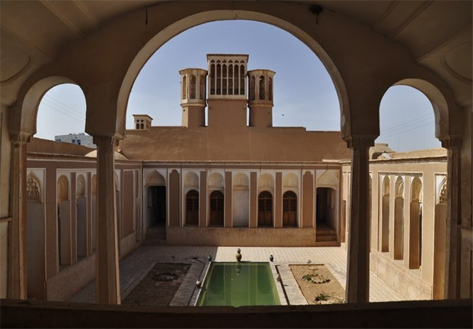
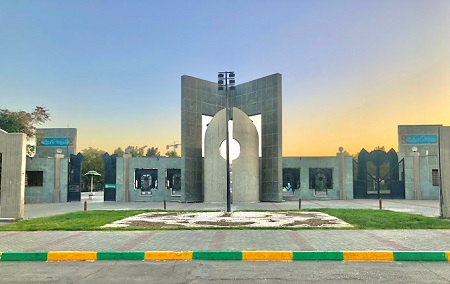

Copyright 2019 Reflux Design
درباره من
من محدثه قیصری هستم. در اردیبهشت سال هشتاد و چهار در شهرستان بشرویه به دنیا آمده ام.

بیایید کمی بشرویه را بشناسیم
شهرستان بشرویه به مرکزیت شهر بشرویه، از شهرستانهای استان خراسان جنوبی میباشد. کویر بشرویه در بخش شمالی شهرستان واقع است و یکی از جاذبه های مهم شهرستان است هر ساله جمعیت زیادی از گردشگران برای دیدن این جاذبه گردشگری به این شهر سفر میکنند. .در کویر بشرویه امکان رصد ستارگان به خوبی وجود دارد
محل تحصیل من
من دوران ابتدایی خود را در دبستان ام الشهدا، متوسطه اول را در دبیرستان حضرت نرجس و دوره متوسطه دوم را در دبیرستان حضرت مریم گذراندم. سپس با رتبه ششصد و یک در دانشگاه فردوسی مشهد، در رشته علوم کامپیوتر قبول شدم.
